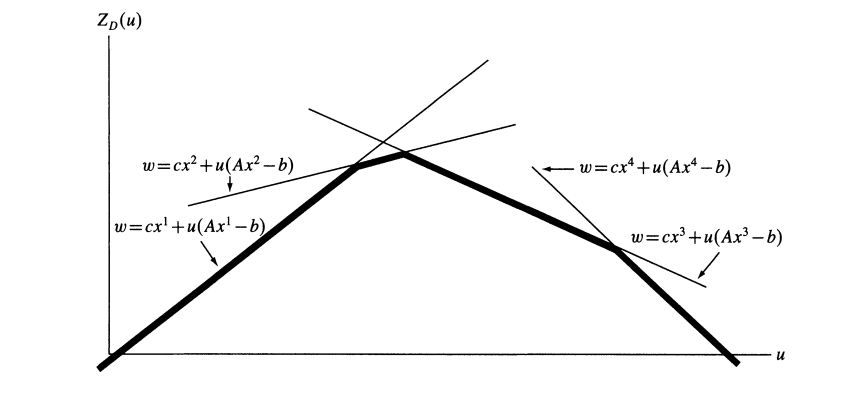

松弛¶
约 3209 个字 1 张图片 预计阅读时间 11 分钟
Reference¶
- https://coral.ise.lehigh.edu/~ted/files/ie418/lectures/Lecture10.pdf
- https://my.ece.utah.edu/~kalla/phy_des/lagrange-relax-tutorial-fisher.pdf
- https://dabeenl.github.io/IE631_lecture19_note.pdf
- https://dabeenl.github.io/IE631_lecture20_note.pdf
1 松弛¶
我们考虑混合整数线性规划（MILP）：
其中
定义 1：\(\eqref{eq:MILP}\) 的一个松弛是一个按如下方式定义的最大化问题：
其具有以下两个性质：
对于最大化问题，松弛问题的最优值是原问题最优值的上界：
-
任取原问题可行解：设 \(x^*\) 是原问题 \(P\) 的最优解，即 \(x^* \in \mathcal{S}\)，且 \(c^\top x^* = \max \{ c^\top x \mid x \in \mathcal{S} \}\).
-
验证松弛问题可行性：由于 \(\mathcal{S} \subseteq \mathcal{S}_R\)，因此 \(x^* \in \mathcal{S}_R\)，即 \(x^*\) 也是松弛问题 \(R\) 的可行解.
-
比较目标函数值：根据松弛问题的性质，对任意 \(x \in \mathcal{S}\)，有 \(c^\top x \leq z_R(x)\). 特别地，对 \(x^*\) 有：
而松弛问题的最优值 \(z_R^*\) 满足 \(z_R^* = \max \{ z_R(x) \mid x \in \mathcal{S}_R \} \geq z_R(x^*)\).
因此：
即原问题最优解的目标函数值 \(c^\top x^*\) 不超过松弛问题的最优值 \(z_R^*\).
获取和使用松弛问题¶
- 松弛问题的性质
- 如果混合整数线性规划 \(\eqref{eq:MILP}\) 的松弛问题不可行，那么 \(\eqref{eq:MILP}\) 本身也不可行.
- 如果\(z_R(x)=c^{\top}x\)， 那么对于\(x^*\in\underset{x\in S_R}{\text{argmax}}\ z_R(x)\)（即在\(S_R\)中使\(z_R(x)\)取得最大值的\(x\)），若\(x^*\in\mathcal{S}\)，则\(x^*\)是 \(\eqref{eq:MILP}\) 的最优解.
- 获得 \(\eqref{eq:MILP}\) 松弛问题最简单的方法是放宽定义可行集\(\mathcal{S}\)的一些约束条件.
2 LP松弛¶
一、定义¶
LP松弛（线性规划松弛）是整数规划求解的关键技术. 针对整数规划（如混合整数线性规划MILP），其操作是移除变量的整数约束，将问题转化为普通线性规划（LP）. 例如，原问题要求变量\(x \in \mathbb{Z}\)（取整），LP松弛后允许\(x \in \mathbb{R}\)（取实数）.
二、原理¶
- 可行域扩展：去掉整数约束后，LP松弛的可行域包含原整数规划的可行域. 如整数规划中变量只能取整数值，松弛后可取对应区间内任意实数.
- 边界性质：
- 最大化问题：LP松弛的最优解是原整数规划最优解的上界（原问题最优值 \(\leq\) 松弛解最优值）.
- 最小化问题：LP松弛的最优解是原整数规划最优解的下界（原问题最优值 \(\geq\) 松弛解最优值）.
三、应用场景¶
- 分支定界算法：
- 在分支定界算法中，LP 松弛常被用于计算子问题的边界. 当求解整数规划问题时，先求解其 LP 松弛问题，如果松弛问题的解恰好是整数解，那么很可能就是原整数规划的最优解；若不是整数解，则可以根据解的情况对问题进行分支，继续搜索最优解.
- 启发式算法辅助：
- 松弛解的结构可启发构造整数可行解. 如车辆路径问题中，依松弛解的路径趋势构建初始路线.
- 问题分析：
- 通过松弛解评估整数规划难度. 若松弛解与整数解差距小，说明问题约束紧密，整数解易逼近；反之则需更精细策略.
四、示例¶
整数规划问题：
LP松弛问题：
求解LP松弛，得最优解\(x=2, y=2\)，目标值\(10\). 此时解为整数，也是原整数规划的最优解. 若松弛解非整数，可据此对变量分支（如限定上下界）继续求解.
3 Lagrainge 松弛¶
考虑如下混合整数规划问题：
假设 \(E x \leq f\) 是“复杂约束”，即没有这些约束时优化问题更易求解. 更准确地说，假设如下形式的混合整数规划问题容易求解：
定义集合\(S\)为：
定义集合 \(Q\) 为：
假设 \(Q\) 非空，且 \(A, b\) 的元素为有理数. 设 \(E\) 的行数为 \(m\)，取 \(\lambda \in \mathbb{R}_+^m\). 那么可定义（MIP）关于 \(\lambda\) 的拉格朗日松弛如下：
命题3.1 对任意 \(\lambda \geq 0\)，有 \(z_{\text{LR}}(\lambda) \geq z_{\text{IP}}\).
证明 设 \(x^*\) 是（MIP）的最优解，特别地，\(x^*\) 满足：
则 \(x^*\) 对拉格朗日松弛问题（LR）也可行. 此外，因 \(E x^* \leq f\) 且 \(\lambda \geq 0\)，有：
这进而意味着
因此，对任意 \(\lambda \geq 0\)，均有 \(z_{\text{LR}}(\lambda) \geq z_{\text{IP}}\)，得证. \(\ \square\)
使用拉格朗日松弛的优势是什么？我们假设 $ E x \leq f $ 是复杂约束，那么求解 (LR) 比求解（MIP）更容易. 此外，命题19.1表明，拉格朗日松弛（LR）为（MIP）提供了有效的上界.
接下来，定义混合整数规划（MIP）的拉格朗日对偶：
因此，\(z_{\text{LD}}\) 是通过拉格朗日松弛能得到的（MIP）的最佳/最紧上界.
定理3.2 \(z_{\text{LD}}\) 满足：
证明 由于 \(Q\) 是由 \(A x \leq b\)（一个有理数线性不等式组）定义的混合整数集合，根据迈耶定理可得：
其中 \(A', b'\) 元素为有理数. 首先，注意到：
其中第二个等式由凸包和有效不等式的引理 1.5给出. 根据线性规划的强对偶性：
其中 \(m'\) 是 \(A'\) 的行数. 即使 \(z_{\text{LR}}(\lambda)\) 无界，此等式仍成立.
引入对偶变量 \(\mu \geq 0\)，构造拉格朗日函数：
\[ L(x,\{\mu\}) = c^\top x + \lambda^\top (f - E x)+\mu^T(b'-A'x). \]
- 对 \(x\) 求偏导：\(\frac{\partial L}{\partial x}=c- E^T\lambda-A'\mu^T=0\).\(\\\)
因此，\(\max_x L(x,\mu)=b'^T\mu+f^T\lambda\). 则
对偶问题为 \(\min_{\mu}\max_x L(x,\mu) = \min_{\mu}b'^T\mu+f^T\lambda\quad \text{s.t.}A'^\top \mu = c - E^\top \lambda, \mu\geq 0\).
于是有：
再次根据强线性规划对偶性：
引入对偶变量 \(x\)，构造拉格朗日函数：
\[ L(\lambda,\mu,\{x\}) = b'^\top \mu + f^\top \lambda+x^T(c- E^T\lambda-A'\mu^T)\\ =c^Tx-\mu^T(A'^Tx-b')-\lambda^T(Ex-f). \]因此，当\(A'^Tx\leq b'\)以及\(Ex\leq f\)时，\(\min_{\lambda\geq 0,\mu\geq 0} L(\lambda,\mu,\{x\})=c^Tx\)，否则\(\min_{\lambda\geq 0,\mu\geq 0} L(\lambda,\mu,\{x\})=-\infty\).
对偶问题为 \(\max_{x}\min_{\lambda\geq 0,\mu\geq 0} L(\lambda,\mu,\{x\}) = c^Tx \quad \text{s.t.}A'^Tx\leq b', Ex\leq f\).
因此, \(z_{LD} = \max \left\{ c^\top x : E x \leq f,\, x \in \text{conv}(Q) \right\}\). \(\ \square\)
根据 Minkowski-Weyl定理，\(\text{conv}(Q)\) 可表示为
其中 \(v^1, \dots, v^n\) 是 \(\text{conv}(Q)\) 的极点，\(r^1, \dots, r^t\) 是 \(\text{conv}(Q)\) 的极射线.
引理 3.3 \(z_{\text{LR}}(\lambda)\) 的定义域为
证明 注意到 \(z_{\text{LR}}(\lambda)\) 有限当且仅当对所有 \(j \in [t]\)，有 \((c - E^\top \lambda)^\top r^j \leq 0\).
定理 3.4 在 \(\text{dom}(z_{\text{LR}})\) 上，\(z_{\text{LR}}\) 是关于 \(\lambda\) 的凸分段线性函数.
证明 设 \(\lambda \in \text{dom}(z_{\text{LR}})\). 由于
且对所有 \(j \in [t]\)，有 \((c - E^\top \lambda)^\top r^j \leq 0\)，可得
因此，\(z_{\text{LR}}(\lambda)\) 是线性函数 \(c^\top v^j + (f - Ev^j)^\top \lambda\)（\(j \in [n]\)）的最大值. 故 \(z_{\text{LR}}(\lambda)\) 是凸分段线性函数.
定理 3.5 设 \(z_{\text{LP}}\) 为（MIP）的线性规划松弛最优值，则 \(z_{\text{IP}} \leq z_{\text{LD}} \leq z_{\text{LP}}\).
证明
由命题3.1，可得\(z_{IP}\leq z_{LD}\).\(\\\)
设\(X=\{x\in\mathbb{R}^m_+:Ax\leq b\},H=\{x\in\mathbb{R}^m_+:Ex\leq f\}\)
最后一个不等式是因为对于任意\(x\in X\)以及\(\lambda\geq 0\)，有\(\lambda^T(Ex-f)\)，如果\(x\in H(Ex\leq f)\)，那么\(\lambda^T(f-Ex)\geq 0\).
定理 3.6 若 \(\text{conv}(Q) = \left\{ x : Ax \leq b \, x \in \mathbb{R}_+^d \times \mathbb{R}_+^p\right\}\)，则 \(z_{\text{LD}} = z_{\text{LP}}\).
确定拉格朗日乘子\(\lambda\)¶
根据对偶理论，\(\lambda\) 的最佳选择是对偶问题的一个最优解：
假设可行解集\(Q\)是有限的，可表示为\(Q = \{x^t \mid t = 1, \ldots, T\}\)
由于\(Q\)有限，\(\max_x\)操作等价于在所有\(x^t \in X\)中取最大值. 因此，对偶问题可重新表述为：
其中\(w\)是新引入的变量，约束条件确保\(w\)不超过每个\(x^t\)对应的目标函数值. 这将问题转化为具有\(T\)个约束的线性规划，其最优解\(w^*\)即为原对偶问题的最优值\(z_{LD}\). 这种转化利用了\(X\)的有限性，将非光滑的对偶函数优化问题转化为线性规划问题.
问题（\(\overline{\text{LD}}\)）表明，\(Z_{LR}(\lambda)\)是有限个线性函数族的下包络. 下图展示了\(m = 1\)且\(T = 4\)时\(Z_{LR}(\lambda)\)的形式. 函数\(Z_{LR}(\lambda)\)具备连续性和凹性等优良性质，这些性质让爬山算法易于应用，除了一个例外——可微性. 尽管\(Z_{LR}(\lambda)\)几乎处处可微，但在最优点处通常不可微.

确定拉格朗日乘子\(\lambda\)方法总结：
以下是三类主要方法：
使用次梯度法求解(D)的最优解
- 迭代公式：
其中\(x^k\)是当前乘子\(u^k\)下松弛问题的最优解，\(t_k\)为步长.
- 步长选择：
\(Z^*\)为原问题上界，\(\lambda_k\)通常取2并逐步减半以平衡收敛速度与稳定性.
- 特点：易实现且广泛应用，但无法保证最优性，需通过迭代次数限制终止.
使用单纯形法（列生成技术）求解问题(D)的最优解
- 将对偶问题转化为线性规划形式\((\overline{\text{LD}})\)，通过列生成技术求解.
- 包括对偶单纯形法、原始-对偶法及BOXSTEP方法，需结合松弛问题的结构特性设计.
- 计算复杂度较高，但可与次梯度法结合用于优化后期阶段.
乘数调整法
- 针对特定问题设计调整方向（如单变量调整），利用结构信息加速收敛.
- 例如，广义分配问题中每次调整一个乘子，显著提升算法效率.
- 需根据问题特性选择调整方向集\(S\)，平衡搜索空间与计算成本.
创建日期: April 21, 2025 13:02:15